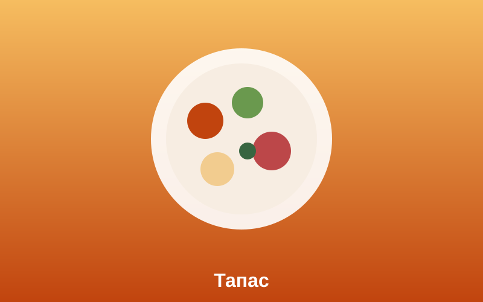

🏛️ Визначні пам'ятки
- Саграда Фамілія — собор Ґауді, який будують із 1882 року, і кожен рік він інший.
- Парк Ґуель — мозаїчна ящірка й вигляд на все місто з терас.
- Готичний квартал — вузькі вулички, де легко заблукати й не пошкодувати.
- Каса Батльо — будинок без жодної прямої лінії.

🍽️ Кухня та гастрономія
Тапас, паелья та хамон — тут їдять довго й гуртом 🥘. Ми обійшли шість барів за вечір і кожного разу замовляли лише по дві маленькі тарілки. Десертом став крем-карамель, а вранці — ensaimada з гарячим шоколадом.

🎭 Культура та традиції
Каталонці гордяться своєю мовою, святом Сант-Жорді, коли дарують книжки й троянди, та людськими вежами «кастельс». Сієста тут — не легенда: багато крамниць зачиняються вдень, а життя оживає пізно ввечері.
Віртуальна прогулянка мапою
💭 Особисті історії
Ми піднялися на пагорб Бункерс-дель-Кармель якраз на заході сонця. Мільйон вогників, гітара десь неподалік і маленька пляшка води на трьох. Тоді я зрозумів, що архітектуру можна не лише розглядати, а й відчувати.